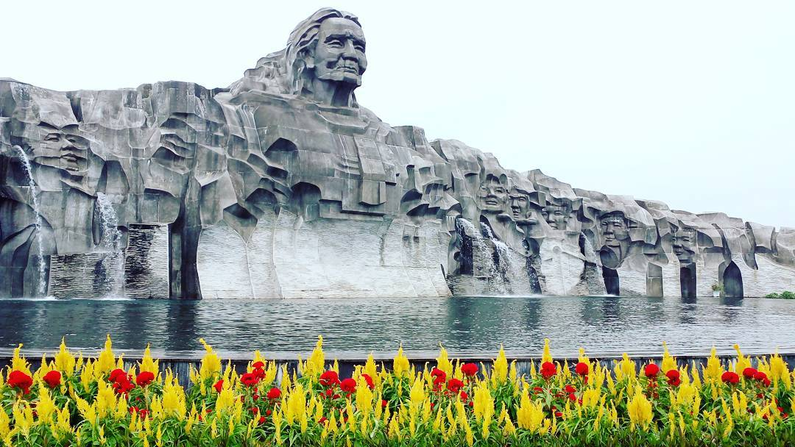
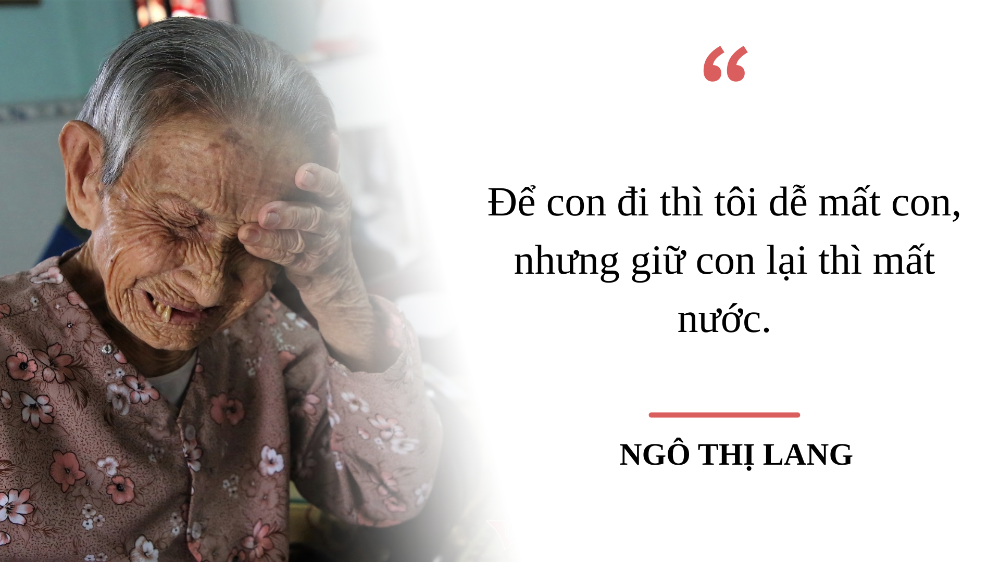

Làng Mẹ Việt Nam Anh hùng
NHÓM 3 - 17/10/2025
Giới thiệu
“Làng Mẹ Việt Nam Anh hùng” là một danh hiệu thiêng liêng, gắn liền với lòng tự hào dân tộc và
truyền thống “uống nước nhớ nguồn” của nhân dân ta. Danh hiệu ấy được dành cho những ngôi làng có số lượng
lớn
Bà mẹ Việt Nam Anh hùng, liệt sĩ, người có công với cách mạng, tiêu biểu là làng Cẩm Sa, thuộc phường Điện
Nam
Đông, thị xã Điện Bàn, tỉnh Quảng Nam (nay thuộc thành phố Đà Nẵng mở rộng). Đây là mảnh đất kiên trung,
giàu
truyền thống cách mạng, đã góp phần to lớn vào sự nghiệp đấu tranh giành độc lập, thống nhất đất
nước.
Trong suốt hai cuộc kháng chiến trường kỳ chống thực dân Pháp và đế quốc Mỹ, hầu như mỗi gia
đình ở
Cẩm Sa đều
có người tham gia cách mạng. Người trực tiếp cầm súng chiến đấu, người làm giao liên, người nuôi giấu cán
bộ, có
người đã anh dũng hy sinh, vĩnh viễn nằm lại chiến trường. Nhiều gia đình bị bom đạn xóa sổ cả dòng họ,
nhưng
tinh thần quật cường, lòng yêu nước và niềm tin vào ngày độc lập chưa bao giờ tắt.
Cẩm Sa vì thế được mệnh danh là “Làng Mẹ Việt Nam Anh hùng”, nơi có số lượng Bà mẹ Việt Nam Anh
hùng và liệt sĩ
nhiều nhất cả nước. Mỗi người mẹ nơi đây là một biểu tượng sống động của đức hy sinh, lòng trung hậu, sự
kiên
cường của phụ nữ Việt Nam. Họ đã tiễn chồng, con, anh em lên đường ra trận, chấp nhận nỗi đau riêng để đổi
lấy
hòa bình cho dân tộc.
Ngày nay, khi đất nước đã hòa bình, Cẩm Sa vẫn là địa chỉ đỏ trong công tác giáo dục truyền
thống
cách mạng.
Hàng năm, nhiều đoàn học sinh, sinh viên, chiến sĩ trẻ và du khách đến thăm viếng, tưởng niệm và tri ân công
lao
to lớn của các Mẹ Việt Nam Anh hùng. Những câu chuyện, kỷ vật và di tích ở đây trở thành bài học quý giá về
lòng
yêu nước, ý chí bất khuất và tinh thần đoàn kết dân tộc, nhắc nhở thế hệ hôm nay phải sống xứng đáng với sự
hy
sinh của cha anh.
Công lao với cách mạng
Nhắc đến làng Cẩm Sa là nhắc đến một biểu tượng anh hùng của miền Trung, nơi sản sinh nhiều nhân
tài, tướng
lĩnh và anh hùng lực lượng vũ trang nhân dân. Trong hơn ba thập kỷ kháng chiến, từ những ngày đầu chống thực
dân Pháp đến cuộc kháng chiến chống Mỹ cứu nước, người dân Cẩm Sa đã kiên cường chiến đấu, đóng góp sức
người, sức của cho tiền tuyến.
Nơi đây là quê hương của năm vị tướng và Anh hùng Lực lượng vũ trang nhân dân, gồm:
Thiếu tướng Phạm Bân - Anh hùng Lực lượng vũ trang, nguyên Tỉnh đội trưởng Quảng Nam - Đà
Nẵng.
Thượng tướng Lê Thế Tiệm - nguyên Thứ trưởng Bộ Công an.
Thiếu tướng tình báo Phạm Mai - người hoạt động trong lĩnh vực tình báo chiến lược.
Thiếu tướng Trần Đối - Anh hùng Lực lượng vũ trang, nguyên Phó Tư lệnh Mặt trận 479.
Trung tướng Nguyễn Văn Thảng - Chính ủy Quân khu 5.
Đó là những người con ưu tú của quê hương, đã góp phần làm rạng danh Cẩm Sa trên bản đồ cách
mạng Việt Nam.
Không chỉ có vậy, ngôi làng nhỏ này còn có hơn 500 liệt sĩ, hơn 100 Bà mẹ Việt Nam Anh hùng, con số khiến
ai nghe cũng phải xúc động và khâm phục. Trong mỗi ngôi nhà ở Cẩm Sa, đều có bàn thờ người có công với nước,
như một chứng nhân sống cho lịch sử hào hùng của dân tộc.
Trong những năm kháng chiến ác liệt, Cẩm Sa là căn cứ cách mạng vững chắc của quân dân Quảng Nam
- Đà Nẵng.
Nhiều trận đánh lớn đã diễn ra quanh vùng này, nơi nhân dân kiên cường bám đất, che chở cán bộ, bảo vệ phong
trào. Dù địch càn quét, bom đạn dội xuống, người dân vẫn một lòng hướng về Đảng, tin tưởng vào thắng lợi
cuối cùng.
Ý nghĩa lịch sử và giá trị nhân văn
Danh hiệu “Làng Mẹ Việt Nam Anh hùng” không chỉ là niềm vinh dự của riêng Cẩm Sa mà còn là niềm
tự hào chung
của cả dân tộc Việt Nam. Nó khẳng định sự hy sinh cao cả của người mẹ Việt Nam, những người đã lấy nước mắt
và máu xương để tưới xanh độc lập tự do của Tổ quốc.
Ngày nay, trên mảnh đất Cẩm Sa, tượng đài Mẹ Việt Nam Anh hùng, nhà tưởng niệm và khu di tích
cách mạng được
xây dựng khang trang, trở thành điểm đến giáo dục truyền thống cho thế hệ trẻ. Mỗi năm, hàng nghìn lượt
người đến đây thắp nén hương tri ân, lắng nghe những câu chuyện cảm động về tình mẫu tử, về lòng trung hiếu,
thủy chung son sắt của người dân nơi đây.

Làng Cẩm Sa chính là tấm gương sáng về lòng yêu nước, sự kiên cường, bất khuất của nhân dân Việt
Nam trong
mọi thời đại. Tinh thần ấy, truyền thống ấy vẫn đang được tiếp nối qua từng thế hệ, từ những người mẹ anh
hùng đến những người con hôm nay đang hăng say lao động, học tập, xây dựng quê hương giàu đẹp, văn
minh.
Kết luận
“Làng Mẹ Việt Nam Anh hùng” Cẩm Sa không chỉ là một địa danh, mà là biểu tượng bất tử của lòng yêu nước và
đức hy sinh cao cả. Mỗi người dân Việt Nam khi nhắc đến nơi đây đều cảm nhận được lòng biết ơn sâu sắc đối
với thế hệ cha anh, những con người đã hiến dâng trọn đời mình cho Tổ quốc.
Cẩm Sa mãi mãi là ngọn lửa sáng trong lịch sử dân tộc, nhắc nhở mỗi chúng ta hôm nay phải sống, học tập và
cống hiến xứng đáng với sự hy sinh của những người mẹ anh hùng, những người mẹ của đất nước Việt Nam.

Hết